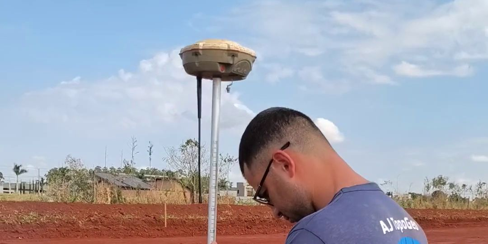
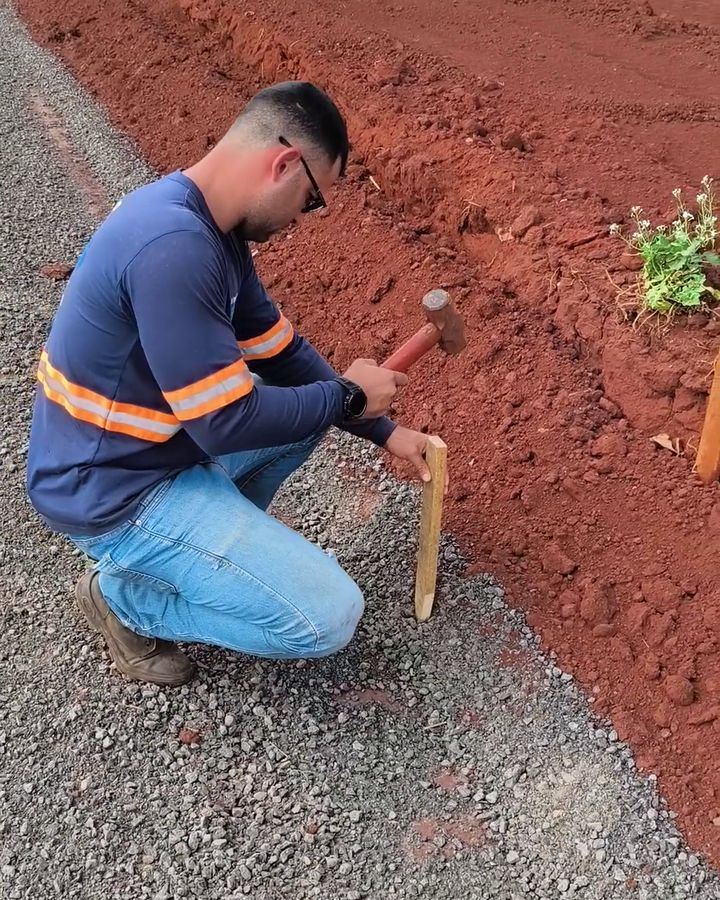
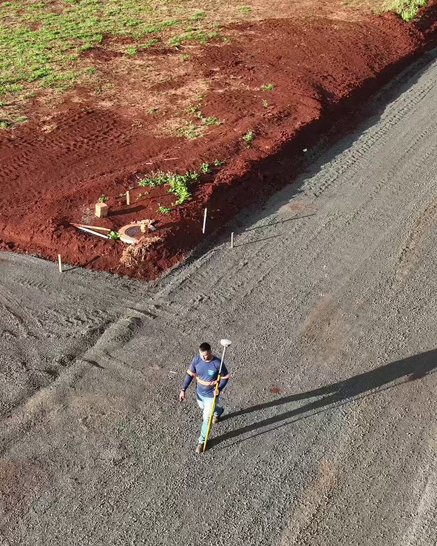
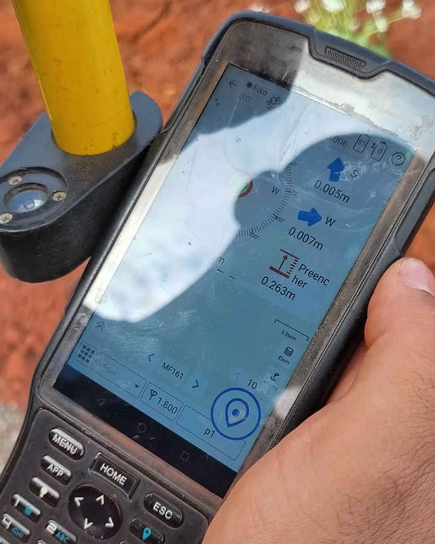

O que é locação de obra
Locação é o caminho inverso do levantamento topográfico. No levantamento, o terreno vira informação para um projeto que ainda vai ser desenhado. Na locação, o projeto já existe — e o trabalho é levá-lo até o terreno, marcando com piquetes e estacas cada ponto que a obra vai seguir: eixo da rua, alinhamento do meio-fio, cota de corte, cota de aterro, centro de um poço de visita.
É uma etapa que quase ninguém vê no resultado final, mas que decide o resultado final. Marcação errada vira rua torta, curva fora do raio, guia fora de nível — e retrabalho de máquina.
O que locamos
- Loteamentos — arruamento, esquinas, quadras e lotes, do projeto urbanístico para o chão
- Meio-fio e guias — alinhamento e nível para curvas no raio certo e ruas retas
- Terraplanagem e estradas — eixo, estaqueamento e cotas de corte e aterro para a máquina trabalhar
- Redes de esgoto e drenagem — poços de visita, com cadastro de amarração antes da pavimentação
- Edificações e galpões — eixos, gabarito e fundações



Como fazemos a locação com GNSS RTK
- Base sobre ponto conhecido — o receptor base é instalado sobre um ponto de apoio com coordenada conhecida, na mesma referência do projeto.
- Correção em tempo real — o rover recebe a correção da base, e só marcamos com a solução Fixa confirmada na controladora.
- Navegação até o ponto — a controladora guia até a coordenada de projeto; o piquete é cravado e identificado (eixo, estaca, cota).
- Conferência — pontos de controle são remedidos para garantir que a marcação bate com o projeto antes de a máquina entrar.
Só depois disso a obra avança: a máquina entra no corte e no aterro, a guia é assentada, a rede é escavada — sempre seguindo uma referência que foi medida, não estimada.
Poços de visita: a marcação que precisa sobreviver ao asfalto
Na implantação de redes, cada poço de visita é construído antes da pavimentação — e depois a capa asfáltica cobre o tampão. Antes disso, fazemos o cadastro de amarração de cada PV, que permite relocá-lo com precisão sobre o asfalto novo. Explicamos o processo no artigo Locação de PV: como achar o poço de visita depois do asfalto.
Locação em etapas, acompanhando a obra
A locação raramente é um serviço de um dia só. Em loteamentos e obras de infraestrutura, acompanhamos cada fase: eixo e cotas antes da terraplanagem, alinhamento de meio-fio antes da guia, cadastro das redes antes do asfalto. Se você também precisa do levantamento inicial, veja topografia e levantamento planialtimétrico e topografia para loteamento em MS.